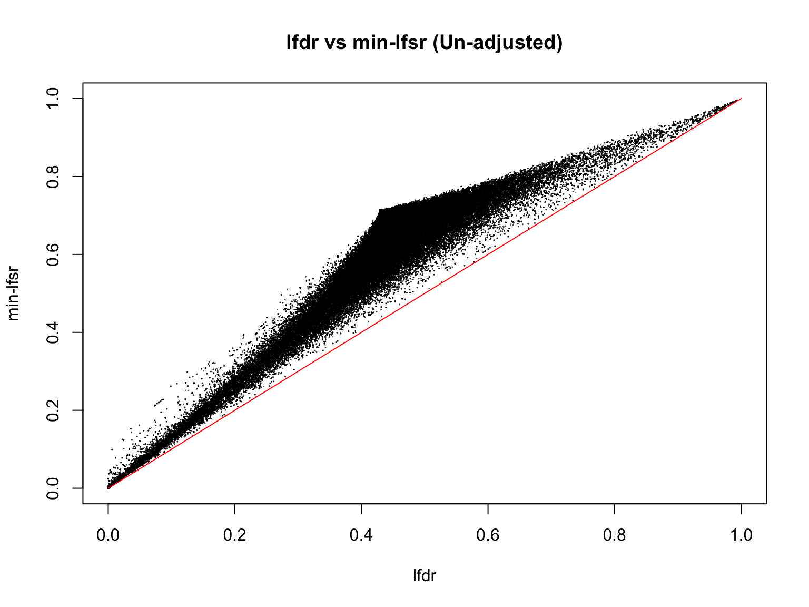
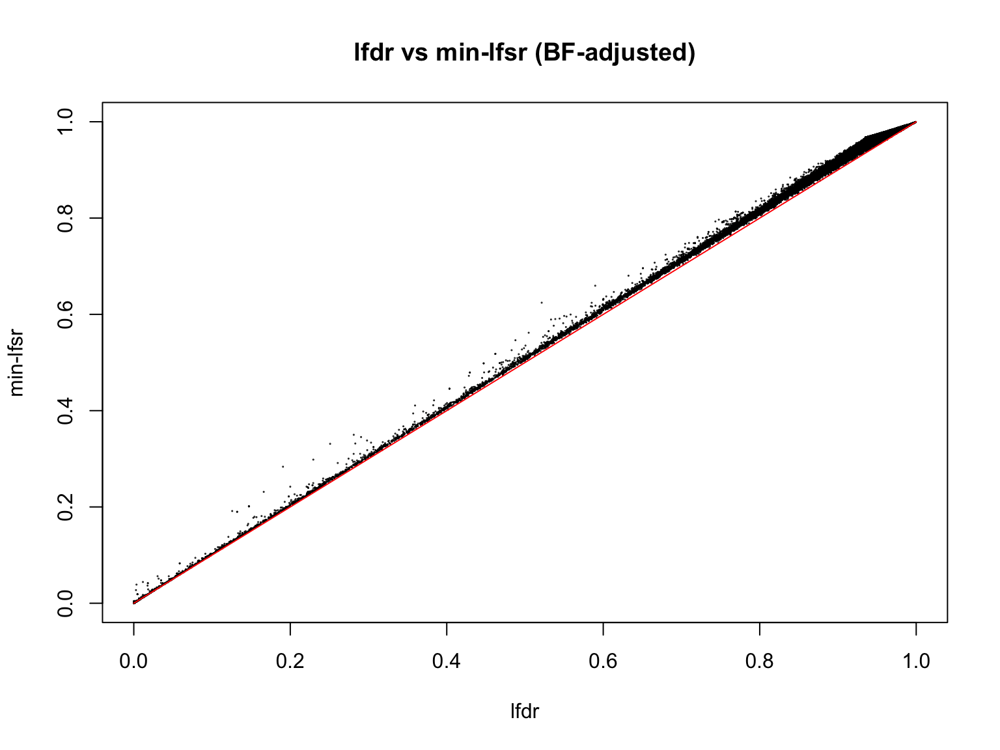
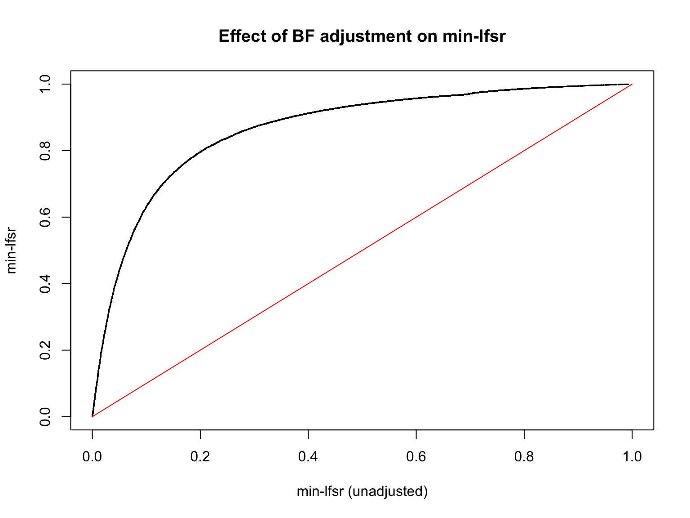
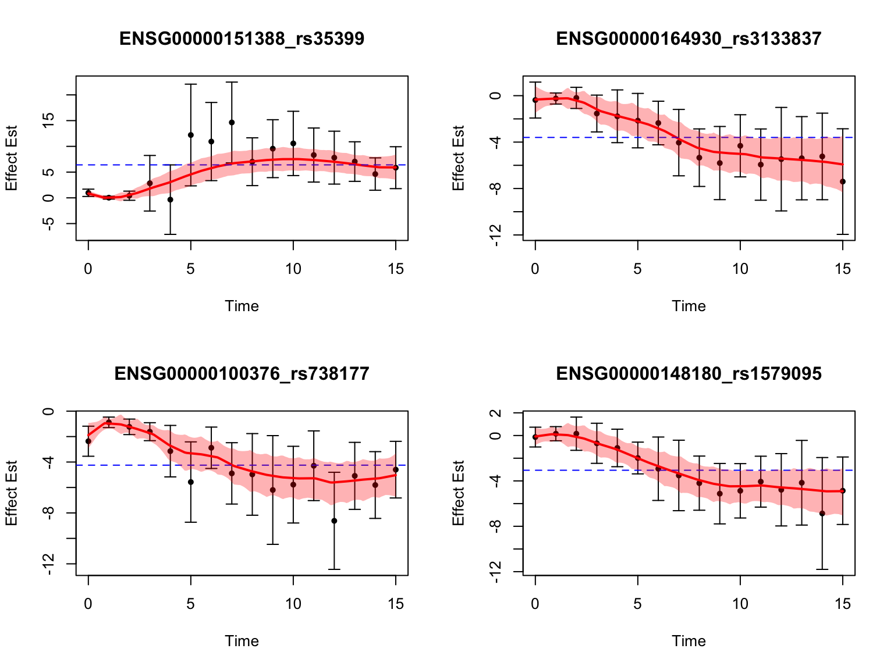
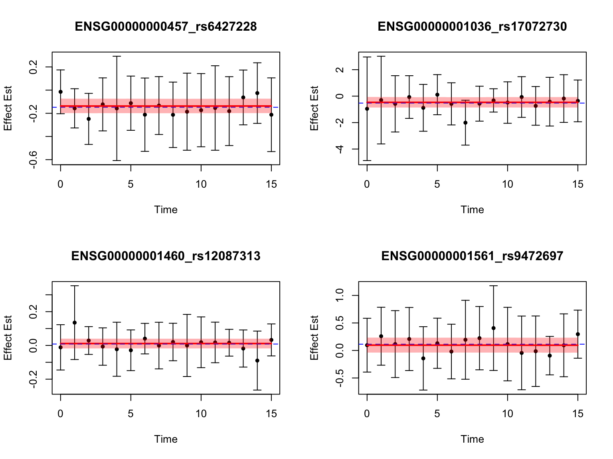
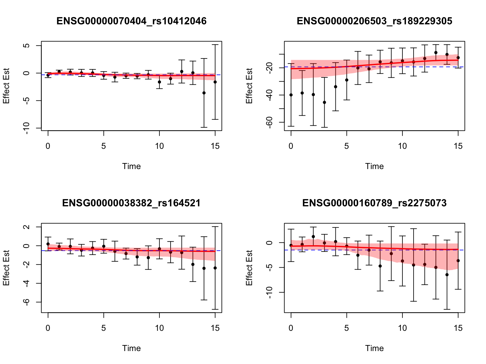
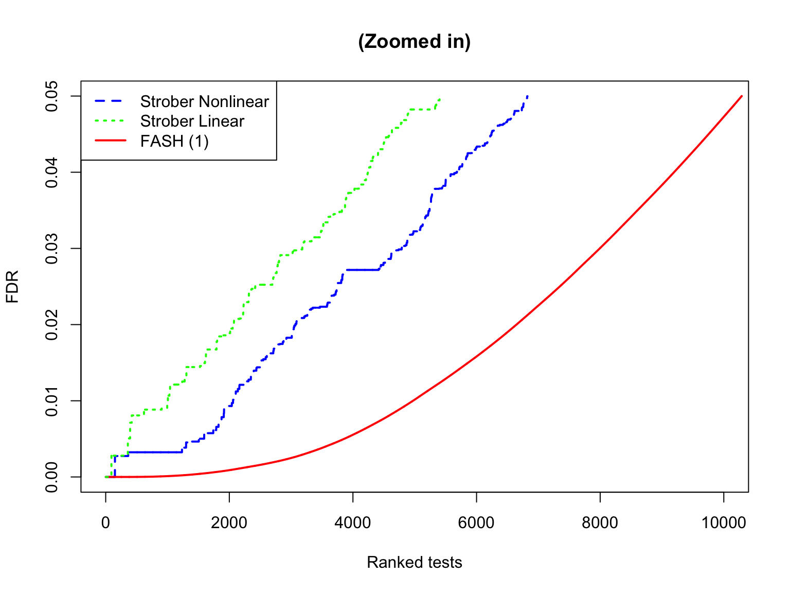
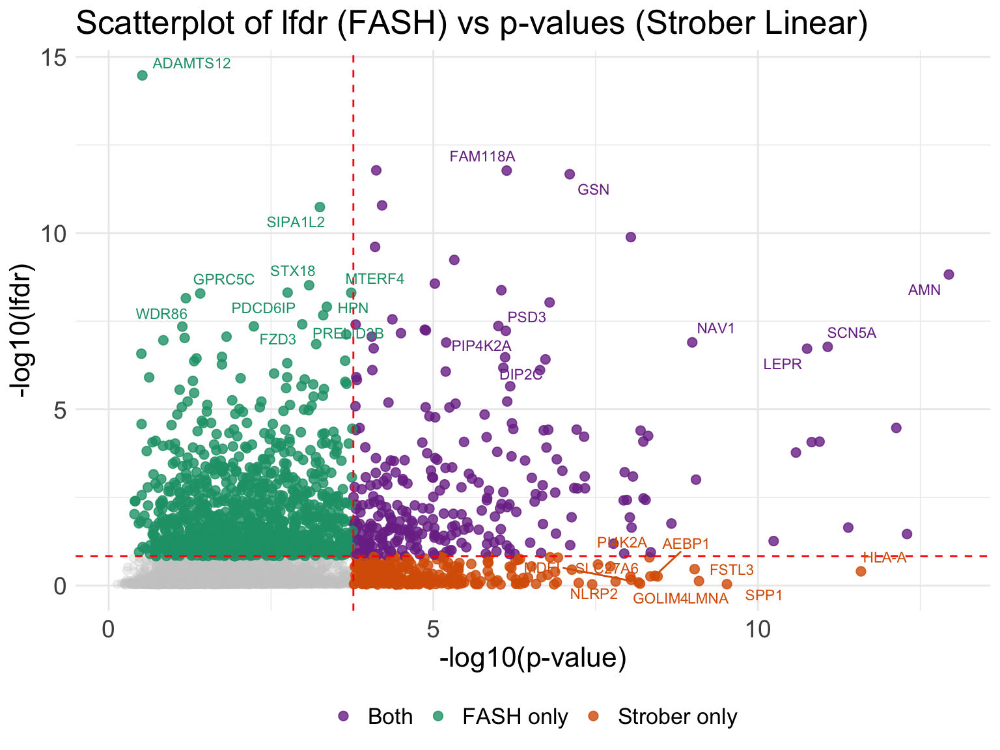

Dynamic eQTL analysis on iPSC
Ziang Zhang
2025-02-21
Last updated: 2025-12-18
Checks: 7 0
Knit directory: fashr-paper-stephenslab/
This reproducible R Markdown analysis was created with workflowr (version 1.7.2). The Checks tab describes the reproducibility checks that were applied when the results were created. The Past versions tab lists the development history.
Great! Since the R Markdown file has been committed to the Git repository, you know the exact version of the code that produced these results.
Great job! The global environment was empty. Objects defined in the global environment can affect the analysis in your R Markdown file in unknown ways. For reproduciblity it’s best to always run the code in an empty environment.
The command set.seed(20251109) was run prior to running
the code in the R Markdown file. Setting a seed ensures that any results
that rely on randomness, e.g. subsampling or permutations, are
reproducible.
Great job! Recording the operating system, R version, and package versions is critical for reproducibility.
Nice! There were no cached chunks for this analysis, so you can be confident that you successfully produced the results during this run.
Great job! Using relative paths to the files within your workflowr project makes it easier to run your code on other machines.
Great! You are using Git for version control. Tracking code development and connecting the code version to the results is critical for reproducibility.
The results in this page were generated with repository version c0e05d7. See the Past versions tab to see a history of the changes made to the R Markdown and HTML files.
Note that you need to be careful to ensure that all relevant files for
the analysis have been committed to Git prior to generating the results
(you can use wflow_publish or
wflow_git_commit). workflowr only checks the R Markdown
file, but you know if there are other scripts or data files that it
depends on. Below is the status of the Git repository when the results
were generated:
Ignored files:
Ignored: .DS_Store
Ignored: .Rhistory
Ignored: .Rproj.user/
Ignored: code/.DS_Store
Ignored: data/.DS_Store
Ignored: data/toy_example/
Ignored: output/.DS_Store
Untracked files:
Untracked: code/enrich_analysis.R
Untracked: data/appendixB/
Untracked: data/dynamic_eQTL_real/
Untracked: output/appendixB/
Untracked: output/dynamic_eQTL_real/
Untracked: output/toy_example/
Note that any generated files, e.g. HTML, png, CSS, etc., are not included in this status report because it is ok for generated content to have uncommitted changes.
These are the previous versions of the repository in which changes were
made to the R Markdown (analysis/dynamic_eQTL_real.rmd) and
HTML (docs/dynamic_eQTL_real.html) files. If you’ve
configured a remote Git repository (see ?wflow_git_remote),
click on the hyperlinks in the table below to view the files as they
were in that past version.
| File | Version | Author | Date | Message |
|---|---|---|---|---|
| Rmd | c0e05d7 | Ziang Zhang | 2025-12-18 | workflowr::wflow_publish("analysis/dynamic_eQTL_real.rmd") |
| html | c75cd5f | Ziang Zhang | 2025-12-18 | Build site. |
| Rmd | 27c4197 | Ziang Zhang | 2025-12-18 | workflowr::wflow_publish("analysis/dynamic_eQTL_real.rmd") |
| html | c3e274e | Ziang Zhang | 2025-12-17 | Build site. |
| Rmd | c636ff9 | Ziang Zhang | 2025-12-17 | workflowr::wflow_publish("analysis/dynamic_eQTL_real.rmd") |
| html | 2010ecb | Ziang Zhang | 2025-12-16 | Build site. |
| Rmd | bd29c15 | Ziang Zhang | 2025-12-16 | workflowr::wflow_publish("analysis/dynamic_eQTL_real.rmd") |
| html | 5be62b6 | Ziang Zhang | 2025-12-12 | Build site. |
| Rmd | bb505cf | Ziang Zhang | 2025-12-12 | workflowr::wflow_publish("analysis/dynamic_eQTL_real.rmd") |
| html | 83145cc | Ziang Zhang | 2025-12-12 | Build site. |
| Rmd | aae2964 | Ziang Zhang | 2025-12-12 | workflowr::wflow_publish("analysis/dynamic_eQTL_real.rmd") |
| html | 36a81a3 | Ziang Zhang | 2025-11-09 | Build site. |
| html | d73f3f1 | Ziang Zhang | 2025-11-09 | Build site. |
| Rmd | 9f55956 | Ziang Zhang | 2025-11-09 | workflowr::wflow_publish("analysis/dynamic_eQTL_real.rmd") |
knitr::opts_chunk$set(fig.width = 8, fig.height = 6)
library(fashr)
library(biomaRt)
library(ggrepel)Loading required package: ggplot2mart <- useEnsembl(biomart = "genes", dataset = "hsapiens_gene_ensembl")
result_dir <- paste0(getwd(), "/output/dynamic_eQTL_real")
data_dir <- paste0(getwd(), "/data/dynamic_eQTL_real")
code_dir <- paste0(getwd(), "/code/dynamic_eQTL_real")
log_prec <- seq(0,10, by = 0.2)
fine_grid <- sort(c(0, exp(-0.5*log_prec)))Obtain the effect size of eQTLs
We use the processed (expression & genotype) data of Strober et.al, 2019 to perform the eQTL analysis.
For the association testing, we use a linear regression model for each gene-variant pair at each time point. Following the practice in Strober et.al, we adjust for the first five PCs.
The code to perform this step can be found in the script
dynamic_eQTL_real/00_eQTLs.R from the code directory.
After this step, we have the effect size of eQTLs for each gene-variant pair at each time point, as well as its standard error.
Fitting FASH
To fit the FASH model on \(\{\beta_i(t_j), s_{ij}\}_{i\in N,j \in [16]}\), we consider fitting two FASH models:
A FASH model based on first order IWP (testing for dynamic eQTLs: \(H_0: \beta_i(t)=c\)).
A FASH model based on second order IWP (testing for nonlinear-dynamic eQTLs: \(H_0: \beta_i(t)=c_1+c_2t\)).
The code to perform this step can be found in the script
dynamic_eQTL_real/01_fash.R from the code directory.
We will directly load the fitted FASH models from the output directory.
load(paste0(result_dir, "/fash_fit1_all.RData"))We will load the datasets from the fitted FASH object:
datasets <- fash_fit1$fash_data$data_list
for (i in 1:length(datasets)) {
datasets[[i]]$SE <- fash_fit1$fash_data$S[[i]]
}
all_genes <- unique(sapply(strsplit(names(datasets), "_"), "[[", 1))
full_map <- getBM(
attributes = c("hgnc_symbol", "ensembl_gene_id"),
filters = "ensembl_gene_id",
values = all_genes,
mart = mart
)In this analysis, we will focus on the FASH(1) model that assumes a first order IWP and tests for dynamic eQTLs.
Let’s take a quick overview of the fitted FASH model:
log_prec <- seq(0,10, by = 0.2)
fine_grid <- sort(c(0, exp(-0.5*log_prec)))
fash_fit1 <- fash(Y = "beta", smooth_var = "time", S = "SE", data_list = datasets,
num_basis = 20, order = 1, betaprec = 0,
pred_step = 1, penalty = 10, grid = fine_grid,
num_cores = num_cores, verbose = TRUE)
save(fash_fit1, file = "./results/fash_fit1_all.RData")fash_fit1Fitted fash Object
-------------------
Number of datasets: 1009173
Likelihood: gaussian
Number of PSD grid values: 52 (initial), 11 (non-trivial)
Order of Integrated Wiener Process (IWP): 1As well as the estimated priors:
fash_fit1$prior_weights psd prior_weight
1 0.000000000 0.410663695
2 0.006737947 0.141127785
3 0.016572675 0.012015292
4 0.049787068 0.178001757
5 0.074273578 0.071560569
6 0.110803158 0.098258453
7 0.182683524 0.037970329
8 0.246596964 0.021572272
9 0.367879441 0.007501801
10 0.406569660 0.011455909
11 1.000000000 0.009872138Problem with \(\pi_0\) estimation
If we measure the significance using the false discovery rate, then it is sensitive to the value of \(\pi_0\). The estimated \(\pi_0\) is 0.4106637, which is way too small to be realistic.
One likely reason could be due to model-misspecification under the alternative hypothesis. To account for this, we will consider the following approaches:
(i): Computing a conservative estimate of \(\pi_0\) based on the BF procedure:
fash_fit1_update <- BF_update(fash_fit1, plot = FALSE)
fash_fit1_update$prior_weights
save(fash_fit1_update, file = paste0(result_dir, "/fash_fit1_update.RData"))The conservative estimate is 0.93568, which is much more realistic.
(ii): Instead of looking at the FDR which is based on the estimated \(\pi_0\), we can use the minimum local false sign rate (\(\text{min-lfsr}_i\)) to measure significance: \[ \text{min-lfsr}_i = \min_{t} \left\{ \text{lfsr}(W_i(t)) \right\}, \] where \(W_i(t) = \beta_i(t) - \beta_i(0)\).
Let’s compute the significance using the minimum local false sign rate (\(\text{min-lfsr}_i\)):
smooth_var_refined = seq(0,15, by = 0.1)
min_lfsr_summary1 <- min_lfsr_summary(fash_fit1, num_cores = num_cores, smooth_var = smooth_var_refined)
save(min_lfsr_summary1, file = "./results/min_lfsr_summary1.RData")
min_lfsr_summary1_update <- min_lfsr_summary(fash_fit1_update, num_cores = num_cores, smooth_var = smooth_var_refined)
save(min_lfsr_summary1_update, file = "./results/min_lfsr_summary1_update.RData")Let’s visualize how the min-lfsr compares with the local false discovery rate (lfdr):
load(paste0(result_dir, "/min_lfsr_summary1.RData"))
# sample some indices for easy visualization
sample_indices <- sample(1:length(min_lfsr_summary1$min_lfsr), 1e5)
min_lfsr1_unadj <- min_lfsr_summary1$min_lfsr[sample_indices]
lfdr1_vec_unadj <- fash_fit1$lfdr[min_lfsr_summary1$index][sample_indices]
plot(lfdr1_vec_unadj, min_lfsr1_unadj,
pch = 20, cex = 0.1,
ylim = c(0,1), xlim = c(0,1),
xlab = "lfdr", ylab = "min-lfsr", main = "lfdr vs min-lfsr (Un-adjusted)")
lines(c(0,1), c(0,1), col = "red")
| Version | Author | Date |
|---|---|---|
| 2010ecb | Ziang Zhang | 2025-12-16 |
Let’s also visualize the min-lfsr and the lfdr from the BF-updated model:
load(paste0(result_dir, "/min_lfsr_summary1_update.RData"))
min_lfsr1 <- min_lfsr_summary1_update$min_lfsr[sample_indices]
lfdr1_vec <- fash_fit1_update$lfdr[min_lfsr_summary1_update$index[sample_indices]]
plot(lfdr1_vec, min_lfsr1,
pch = 20, cex = 0.1,
ylim = c(0,1), xlim = c(0,1),
xlab = "lfdr", ylab = "min-lfsr", main = "lfdr vs min-lfsr (BF-adjusted)")
lines(c(0,1), c(0,1), col = "red")
| Version | Author | Date |
|---|---|---|
| 2010ecb | Ziang Zhang | 2025-12-16 |
Indeed, the min-lfsr tends to be more conservative than the lfdr, especially when \(\hat{\pi_0}\) has not been adjusted using the BF procedure.
Let’s also assess how does the BF-update of \(\pi_0\) affect the min-lfsr.
plot(min_lfsr1_unadj, min_lfsr1,
pch = 20, cex = 0.1,
ylim = c(0,1), xlim = c(0,1),
xlab = "min-lfsr (unadjusted)", ylab = "min-lfsr", main = "Effect of BF adjustment on min-lfsr")
lines(c(0,1), c(0,1), col = "red")
| Version | Author | Date |
|---|---|---|
| 2010ecb | Ziang Zhang | 2025-12-16 |
Detecting dynamic eQTLs
We will use the updated FASH model (1) to detect dynamic eQTLs.
alpha <- 0.05
test1 <- fdr_control(fash_fit1_update, alpha = alpha, plot = F)10290 datasets are significant at alpha level 0.05. Total datasets tested: 1009173. fash_highlighted1 <- test1$fdr_results$index[test1$fdr_results$FDR <= alpha]
test1_before <- fdr_control(fash_fit1, alpha = alpha, plot = F)50027 datasets are significant at alpha level 0.05. Total datasets tested: 1009173. fash_highlighted1_before <- test1_before$fdr_results$index[test1_before$fdr_results$FDR <= alpha]How many pairs are detected as dynamic eQTLs?
pairs_highlighted1 <- names(datasets)[fash_highlighted1]
length(pairs_highlighted1)[1] 10290length(pairs_highlighted1)/length(datasets)[1] 0.01019647What is the number before the BF adjustment?
pairs_highlighted1_before <- names(datasets)[fash_highlighted1_before]
length(pairs_highlighted1_before)[1] 50027length(pairs_highlighted1_before)/length(datasets)[1] 0.04957227How many unique genes are detected?
genes_highlighted1 <- unique(sapply(strsplit(pairs_highlighted1, "_"), "[[", 1))
length(genes_highlighted1)[1] 1295length(genes_highlighted1)/length(all_genes)[1] 0.2035523Before the BF adjustment?
genes_highlighted1_before <- unique(sapply(strsplit(pairs_highlighted1_before, "_"), "[[", 1))
length(genes_highlighted1_before)[1] 3417length(genes_highlighted1_before)/length(all_genes)[1] 0.5370953Let’s see how many pairs and genes remain significant after controlling the min-lfsr:
fash_highlighted1_lfsr <- min_lfsr_summary1_update$index[min_lfsr_summary1_update$fsr <= alpha]
pairs_highlighted1_lfsr <- names(datasets)[fash_highlighted1_lfsr]
length(pairs_highlighted1_lfsr)[1] 10070length(pairs_highlighted1_lfsr)/length(datasets)[1] 0.009978468genes_highlighted1_lfsr <- unique(sapply(strsplit(pairs_highlighted1_lfsr, "_"), "[[", 1))
length(genes_highlighted1_lfsr)[1] 1271length(genes_highlighted1_lfsr)/length(all_genes)[1] 0.1997799It seems like once \(\hat{\pi_0}\) is adjusted, there is not much difference between measuring significance using the min-lfsr or the lfdr. From now on, we will consider the pairs that are significant using the lfdr.
Visualize top-ranked pairs for some selected genes:

| Version | Author | Date |
|---|---|---|
| 2010ecb | Ziang Zhang | 2025-12-16 |
Visualize some genes highlighted in the original analysis:

| Version | Author | Date |
|---|---|---|
| 2010ecb | Ziang Zhang | 2025-12-16 |
These examples were highlighted using the un-adjusted FASH model, but not significant after the BF adjustment.
Take a look at the most significant variants for the gene ‘ENSG00000183873’:

| Version | Author | Date |
|---|---|---|
| 2010ecb | Ziang Zhang | 2025-12-16 |
Another highlighted pair in the original analysis is ‘ENSG00000166704_rs8107849’:
selected_index <- which("ENSG00000166704_rs8107849" == names(datasets))
# shorthand
x <- datasets[[selected_index]]$x
y <- datasets[[selected_index]]$y
se <- datasets[[selected_index]]$SE
w <- 1 / (se^2)
y_min <- min(y - 2 * se)
y_max <- max(y + 2 * se)
# weighted mean
y_wmean <- sum(y * w) / sum(w)
# weighted linear fit
lin_fit <- lm(y ~ x, weights = w)
# weighted quadratic fit
quad_fit <- lm(y ~ poly(x, 2, raw = TRUE), weights = w)
x_grid <- seq(min(x), max(x), length.out = 200)
quad_pred <- predict(quad_fit, newdata = data.frame(x = x_grid))
# FASH fit (after adjustment)
fitted_result <- predict(
fash_fit1_update,
index = selected_index,
smooth_var = seq(0, 15, by = 0.1)
)
# FASH fit (before adjustment)
fitted_result_before <- predict(
fash_fit1,
index = selected_index,
smooth_var = seq(0, 15, by = 0.1)
)
par(mfrow = c(1,1))
plot(
x, y,
pch = 20,
col = "black",
xlab = "Time",
ylab = "Effect Est",
# main = names(datasets)[selected_index],
ylim = c(y_min, y_max)
)
variant_id <- strsplit(names(datasets)[selected_index], "_")[[1]][2]
gene_symbol <- full_map$hgnc_symbol[full_map$ensembl_gene_id == "ENSG00000166704"]
title(main = paste0(gene_symbol, ": ", variant_id))
arrows(
x0 = x,
y0 = y - 2 * se,
x1 = x,
y1 = y + 2 * se,
length = 0.05,
angle = 90,
code = 3,
col = "black"
)
polygon(
c(fitted_result_before$x, rev(fitted_result_before$x)),
c(fitted_result_before$lower, rev(fitted_result_before$upper)),
col = rgb(1, 0, 0, 0.3),
border = NA
)
# posterior mean curve
lines(
fitted_result_before$x,
fitted_result_before$mean,
col = "red",
lwd = 2
)
# # weighted average line
# abline(h = y_wmean, col = "blue", lty = 2)
# weighted linear fit
abline(lin_fit, col = "green", lty = 2, lwd = 1)
# weighted quadratic curve
lines(x_grid, quad_pred, col = "purple", lty = 2, lwd = 1)
# lfdr before
lfdr_before <- fash_fit1$lfdr[selected_index]
# caption text
caption <- sprintf("lfdr (raw) = %.3f",
lfdr_before)
title(sub = caption, cex.sub = 0.8)
| Version | Author | Date |
|---|---|---|
| 2010ecb | Ziang Zhang | 2025-12-16 |
plot(
x, y,
pch = 20,
col = "black",
xlab = "Time",
ylab = "Effect Est",
# main = names(datasets)[selected_index],
ylim = c(y_min, y_max)
)
title(main = paste0(gene_symbol, ": ", variant_id))
arrows(
x0 = x,
y0 = y - 2 * se,
x1 = x,
y1 = y + 2 * se,
length = 0.05,
angle = 90,
code = 3,
col = "black"
)
polygon(
c(fitted_result$x, rev(fitted_result$x)),
c(fitted_result$lower, rev(fitted_result$upper)),
col = rgb(1, 0, 0, 0.3),
border = NA
)
# posterior mean curve
lines(
fitted_result$x,
fitted_result$mean,
col = "red",
lwd = 2
)
# # weighted average line
# abline(h = y_wmean, col = "blue", lty = 2)
# weighted linear fit
abline(lin_fit, col = "green", lty = 2, lwd = 1)
# weighted quadratic curve
lines(x_grid, quad_pred, col = "purple", lty = 2, lwd = 1)
# lfdr after
lfdr_after <- fash_fit1_update$lfdr[selected_index]
# caption text
caption <- sprintf("lfdr (adj) = %.3f",
lfdr_after)
title(sub = caption, cex.sub = 0.8)
| Version | Author | Date |
|---|---|---|
| 2010ecb | Ziang Zhang | 2025-12-16 |
par(mfrow = c(1,1))This pair is not significant in FASH with or without BF adjustment.
Take a look at the most significant variants for the gene ‘ENSG00000166704’:
# get the indices of the highlighted pairs for ENSG00000166704
ZNF606_pairs <- names(datasets)[grep("ENSG00000166704", names(datasets))]
# pick the most significant four variants
all_selected_indices <- grep("ENSG00000166704", names(datasets))
lfdr_values <- fash_fit1_update$lfdr[all_selected_indices]
selected_indices <- all_selected_indices[order(lfdr_values)][1:4]
# plot
par(mfrow = c(2,2))
for (selected_index in selected_indices) {
# shorthand
x <- datasets[[selected_index]]$x
y <- datasets[[selected_index]]$y
se <- datasets[[selected_index]]$SE
w <- 1 / (se^2)
y_min <- min(y - 2 * se)
y_max <- max(y + 2 * se)
# weighted mean
y_wmean <- sum(y * w) / sum(w)
# weighted linear fit
lin_fit <- lm(y ~ x, weights = w)
# weighted quadratic fit
quad_fit <- lm(y ~ poly(x, 2, raw = TRUE), weights = w)
x_grid <- seq(min(x), max(x), length.out = 200)
quad_pred <- predict(quad_fit, newdata = data.frame(x = x_grid))
# FASH fit (after adjustment)
fitted_result <- predict(
fash_fit1_update,
index = selected_index,
smooth_var = seq(0, 15, by = 0.1)
)
plot(
x, y,
pch = 20,
col = "black",
xlab = "Time",
ylab = "Effect Est",
# main = names(datasets)[selected_index],
ylim = c(y_min, y_max)
)
variant_id <- strsplit(names(datasets)[selected_index], "_")[[1]][2]
gene_symbol <- full_map$hgnc_symbol[full_map$ensembl_gene_id == "ENSG00000166704"]
title(main = paste0(gene_symbol, ": ", variant_id))
arrows(
x0 = x,
y0 = y - 2 * se,
x1 = x,
y1 = y + 2 * se,
length = 0.05,
angle = 90,
code = 3,
col = "black"
)
polygon(
c(fitted_result$x, rev(fitted_result$x)),
c(fitted_result$lower, rev(fitted_result$upper)),
col = rgb(1, 0, 0, 0.3),
border = NA
)
# posterior mean curve
lines(
fitted_result$x,
fitted_result$mean,
col = "red",
lwd = 2
)
# # weighted average line
# abline(h = y_wmean, col = "blue", lty = 2)
# weighted linear fit
abline(lin_fit, col = "green", lty = 2, lwd = 1)
# weighted quadratic curve
lines(x_grid, quad_pred, col = "purple", lty = 2, lwd = 1)
# lfdr after
lfdr_after <- fash_fit1_update$lfdr[selected_index]
# lfdr before
lfdr_before <- fash_fit1$lfdr[selected_index]
# caption text
caption <- sprintf("lfdr (raw) = %.3f, lfdr (adj) = %.3f",
lfdr_before, lfdr_after)
title(sub = caption, cex.sub = 0.8)
}
par(mfrow = c(1,1))It seems like the BF adjustment significantly increased the lfdr for all these variants, and strongly penalized the curves toward the constant function.
Another two highlighted genes are ‘ENSG00000115641’ and ‘ENSG00000167173’:
# pick the most significant variant for each gene
all_fhl2_indices <- fash_highlighted1[grep("ENSG00000115641", names(datasets)[fash_highlighted1])]
lfdr_values_fhl2 <- fash_fit1_update$lfdr[all_fhl2_indices]
selected_fhl2_index <- all_fhl2_indices[which.min(lfdr_values_fhl2)]
all_c15orf39_indices <- grep("ENSG00000167173", names(datasets))
lfdr_values_c15orf39 <- fash_fit1_update$lfdr[all_c15orf39_indices]
selected_c15orf39_index <- all_c15orf39_indices[which.min(lfdr_values_c15orf39)]
# plot
par(mfrow = c(1,1))
for (selected_index in c(selected_fhl2_index, selected_c15orf39_index)) {
# shorthand
x <- datasets[[selected_index]]$x
y <- datasets[[selected_index]]$y
se <- datasets[[selected_index]]$SE
w <- 1 / (se^2)
y_min <- min(y - 2 * se)
y_max <- max(y + 2 * se)
# weighted mean
y_wmean <- sum(y * w) / sum(w)
# weighted linear fit
lin_fit <- lm(y ~ x, weights = w)
# weighted quadratic fit
quad_fit <- lm(y ~ poly(x, 2, raw = TRUE), weights = w)
x_grid <- seq(min(x), max(x), length.out = 200)
quad_pred <- predict(quad_fit, newdata = data.frame(x = x_grid))
# FASH fit (after adjustment)
fitted_result <- predict(
fash_fit1_update,
index = selected_index,
smooth_var = seq(0, 15, by = 0.1)
)
plot(
x, y,
pch = 20,
col = "black",
xlab = "Time",
ylab = "Effect Est",
# main = names(datasets)[selected_index],
ylim = c(y_min, y_max)
)
variant_id <- strsplit(names(datasets)[selected_index], "_")[[1]][2]
gene_symbol <- full_map$hgnc_symbol[full_map$ensembl_gene_id == strsplit(names(datasets)[selected_index], "_")[[1]][1]]
title(main = paste0(gene_symbol, ": ", variant_id))
arrows(
x0 = x,
y0 = y - 2 * se,
x1 = x,
y1 = y + 2 * se,
length = 0.05,
angle = 90,
code = 3,
col = "black"
)
polygon(
c(fitted_result$x, rev(fitted_result$x)),
c(fitted_result$lower, rev(fitted_result$upper)),
col = rgb(1, 0, 0, 0.3),
border = NA
)
# posterior mean curve
lines(
fitted_result$x,
fitted_result$mean,
col = "red",
lwd = 2
)
# # weighted average line
# abline(h = y_wmean, col = "blue", lty = 2)
# weighted linear fit
abline(lin_fit, col = "green", lty = 2, lwd = 1)
# weighted quadratic curve
lines(x_grid, quad_pred, col = "purple", lty = 2, lwd = 1)
# lfdr after
lfdr_after <- fash_fit1_update$lfdr[selected_index]
# lfdr before
lfdr_before <- fash_fit1$lfdr[selected_index]
# caption text
caption <- sprintf("lfdr (raw) = %.3f, lfdr (adj) = %.3f",
lfdr_before, lfdr_after)
title(sub = caption, cex.sub = 0.8)
}

| Version | Author | Date |
|---|---|---|
| 2010ecb | Ziang Zhang | 2025-12-16 |
par(mfrow = c(1,1))There is a significant variant for ENSG00000115641, but not for ENSG00000167173 after BF adjustment.
Some examples of null pairs:

| Version | Author | Date |
|---|---|---|
| 2010ecb | Ziang Zhang | 2025-12-16 |
Comparing with Strober et.al
We will compare the detected dynamic eQTLs with the results from Strober et.al.
── Attaching core tidyverse packages ──────────────────────── tidyverse 2.0.0 ──
✔ dplyr 1.1.4 ✔ readr 2.1.5
✔ forcats 1.0.1 ✔ stringr 1.5.2
✔ lubridate 1.9.4 ✔ tibble 3.3.0
✔ purrr 1.1.0 ✔ tidyr 1.3.1
── Conflicts ────────────────────────────────────────── tidyverse_conflicts() ──
✖ dplyr::filter() masks stats::filter()
✖ dplyr::lag() masks stats::lag()
✖ dplyr::select() masks biomaRt::select()
✖ tidyr::unite() masks ggVennDiagram::unite()
ℹ Use the conflicted package (<http://conflicted.r-lib.org/>) to force all conflicts to become errorsWhat are the p-value cutoff for linear and non-linear methods in Strober et.al?
pval_cutoff_strober_nonlinear <- max(strober_nonlinear_highlighted$pvalue)
pval_cutoff_strober_linear <- max(strober_linear_highlighted$pvalue)
pval_cutoff_strober_nonlinear[1] 6.829826e-05pval_cutoff_strober_linear[1] 0.0001702417What are the lfdr cutoff for FASH (order 1) before and after BF adjustment?
lfdr_cutoff1_before <- max(fash_fit1$lfdr[test1$fdr_results$index[test1$fdr_results$FDR <= alpha]])
lfdr_cutoff1_after <- max(fash_fit1_update$lfdr[test1$fdr_results$index[test1$fdr_results$FDR <= alpha]])
lfdr_cutoff1_before[1] 0.008331724lfdr_cutoff1_after[1] 0.1478733Let’s take a look at the overlap between the two methods used in Strober et.al and FASH (order 1):

| Version | Author | Date |
|---|---|---|
| 2010ecb | Ziang Zhang | 2025-12-16 |
Produce another Venn diagram for the pairs detected by the three methods:

| Version | Author | Date |
|---|---|---|
| 2010ecb | Ziang Zhang | 2025-12-16 |
Produce similar Venn diagrams for genes and pairs detected by FASH without BF adjustment:

| Version | Author | Date |
|---|---|---|
| 2010ecb | Ziang Zhang | 2025-12-16 |

| Version | Author | Date |
|---|---|---|
| 2010ecb | Ziang Zhang | 2025-12-16 |
There is a large number of genes only detected by FASH (order 1). Let’s take a look at the 4 pairs that are least significant from FASH:

Let’s also take a look at the 4 pairs that are most significant from FASH:

Take a look at the p-values and eFDRs from Strober et.al for some of these pairs:
select_gene_id <- full_map$ensembl_gene_id[full_map$hgnc_symbol %in% c("ALS2", "HACD2", "PRELID3B", "FZD3")]
select_variant_id <- c("rs56361049", "rs13091529", "rs1023654", "rs73557252")
strober_linear %>%
filter(rs_id %in% select_variant_id, ensamble_id %in% select_gene_id) rs_id ensamble_id pvalue eFDR key
1 rs73557252 ENSG00000104290 0.001048184 0.1139101 ENSG00000104290_rs73557252
2 rs1023654 ENSG00000101166 0.001612590 0.1314144 ENSG00000101166_rs1023654
3 rs56361049 ENSG00000003393 0.093553609 0.5820322 ENSG00000003393_rs56361049
4 rs13091529 ENSG00000206527 0.667012163 0.9389185 ENSG00000206527_rs13091529strober_nonlinear %>%
filter(rs_id %in% select_variant_id, ensamble_id %in% select_gene_id) rs_id ensamble_id pvalue eFDR key
1 rs73557252 ENSG00000104290 0.0005736255 0.1013022 ENSG00000104290_rs73557252
2 rs13091529 ENSG00000206527 0.0026303365 0.1879072 ENSG00000206527_rs13091529
3 rs1023654 ENSG00000101166 0.0029242646 0.1961376 ENSG00000101166_rs1023654
4 rs56361049 ENSG00000003393 0.1095795058 0.6700229 ENSG00000003393_rs56361049
gene_symbol
1 FZD3
2 HACD2
3 PRELID3B
4 ALS2Let’s also look at the genes that were missed by FASH, but detected by Strober et.al. In this case, we will pick the most significant pair for each gene in Strober et.al’s results:

Take a look at the same plot but with the unadjusted FASH results:

The shape of eFDR (Strober et al) and FDR (FASH):
# make it easier to plot by subsetting
subset_size <- 10000
subset_seq <- seq(1, length(test1$fdr_results$FDR), length.out = subset_size)
subset_seq <- round(subset_seq)
plot(
sort(strober_nonlinear$eFDR)[subset_seq],
x = subset_seq,
type = "l",
col = "blue",
lwd = 2,
xlab = "Ranked pairs",
ylab = "FDR",
lty = "dashed",
main = ""
)
lines(
sort(test1$fdr_results$FDR)[subset_seq],
x = subset_seq,
col = "red",
lty = "solid",
lwd = 2
)
lines(
sort(strober_linear$eFDR)[subset_seq],
x = subset_seq,
col = "green",
lty = "dotted",
lwd = 2
)
legend(
"topleft",
legend = c("Strober Quadratic", "Strober Linear", "FASH (1)"),
col = c("blue", "green", "red"),
lty = c("dashed", "dotted", "solid"),
lwd = c(2, 2, 2)
)
# zoom into the significant region
plot(
sort(strober_nonlinear$eFDR[strober_nonlinear$eFDR <= 0.05]),
xlim = c(0, 10000),
type = "l",
col = "blue",
lwd = 2,
lty = "dashed",
xlab = "Ranked pairs",
ylab = "FDR",
main = "(Zoomed in)"
)
lines(
sort(test1$fdr_results$FDR[test1$fdr_results$FDR <= 0.05]),
col = "red",
lty = "solid",
lwd = 2
)
lines(
sort(strober_linear$eFDR[strober_linear$eFDR <= 0.05]),
col = "green",
lty = "dotted",
lwd = 2
)
legend(
"topleft",
legend = c("Strober Quadratic", "Strober Linear", "FASH (1)"),
col = c("blue", "green", "red"),
lty = c("dashed", "dotted", "solid"),
lwd = c(2, 2, 2)
)
| Version | Author | Date |
|---|---|---|
| c75cd5f | Ziang Zhang | 2025-12-18 |
Scatterplot of lfdr and p-values from Strober et.al:
eps <- .Machine$double.eps
# compare lfdr versus linear p-values
all_result <- merge(
data.frame(
key = names(datasets)[test1$fdr_results$index],
lfdr = fash_fit1_update$lfdr[test1$fdr_results$index]
),
strober_linear %>%
select(key, ensamble_id, rs_id, pvalue) %>%
select(key, ensamble_id, pvalue),
by = "key"
)
# take the min lfdr and pvalue for each gene
all_result_genes_pvalue <- all_result %>%
group_by(ensamble_id) %>%
slice_min(order_by = pvalue, n = 1, with_ties = FALSE) %>%
ungroup()
all_result_genes_lfdr <- all_result %>%
group_by(ensamble_id) %>%
slice_min(order_by = lfdr, n = 1, with_ties = FALSE) %>%
ungroup()
# merge by gene
all_result_genes <- merge(
all_result_genes_pvalue %>%
select(ensamble_id, pvalue),
all_result_genes_lfdr %>%
select(ensamble_id, lfdr),
by = "ensamble_id"
)
all_result_genes$gene_symbol <- full_map$hgnc_symbol[match(all_result_genes$ensamble_id, full_map$ensembl_gene_id)]
all_result_genes <- all_result_genes %>%
mutate(
neglog_p = -log10(pmin(pmax(pvalue, eps), 1)),
neglog_lfdr = -log10(pmin(pmax(lfdr, eps), 1)),
category = case_when(
pvalue <= pval_cutoff_strober_linear & lfdr <= lfdr_cutoff1_after ~ "Both",
pvalue <= pval_cutoff_strober_linear & lfdr > lfdr_cutoff1_after ~ "Strober only",
pvalue > pval_cutoff_strober_linear & lfdr <= lfdr_cutoff1_after ~ "FASH only",
TRUE ~ "Neither"
),
category = factor(category, levels = c("Both", "FASH only", "Strober only", "Neither"))
)
# Recompute “top” sets (now based on category)
top_strober_only <- all_result_genes %>%
filter(category == "Strober only") %>%
arrange(pvalue) %>%
slice_head(n = 10)
top_fash_only <- all_result_genes %>%
filter(category == "FASH only") %>%
arrange(lfdr) %>%
slice_head(n = 10)
top_both <- all_result_genes %>%
filter(category == "Both") %>%
arrange(pvalue + lfdr) %>%
slice_head(n = 10)
label_df <- bind_rows(top_strober_only, top_fash_only, top_both)
# Color map
col_map <- c(
"Both" = "#7B3294",
"FASH only" = "#1B9E77",
"Strober only" = "#D95F02",
"Neither" = "grey80"
)
ggplot(all_result_genes, aes(x = neglog_p, y = neglog_lfdr)) +
# draw grey background first
geom_point(data = subset(all_result_genes, category == "Neither"),
color = col_map["Neither"], alpha = 0.25, size = 1.8) +
# then colored highlights on top
geom_point(data = subset(all_result_genes, category != "Neither"),
aes(color = category), alpha = 0.8, size = 2.2) +
scale_color_manual(values = col_map) +
geom_vline(xintercept = -log10(pval_cutoff_strober_linear), linetype = "dashed", color = "red") +
geom_hline(yintercept = -log10(lfdr_cutoff1_after), linetype = "dashed", color = "red") +
geom_text_repel(
data = label_df,
aes(label = gene_symbol, color = category),
size = 3,
box.padding = 0.3,
point.padding = 0.5,
max.overlaps = Inf,
show.legend = FALSE
) +
theme_minimal() +
theme(
text = element_text(size = 16),
axis.text = element_text(size = 14),
legend.position = "bottom"
) +
labs(
title = "Scatterplot of lfdr (FASH) vs p-values (Strober Linear)",
x = "-log10(p-value)",
y = "-log10(lfdr)",
color = NULL
)Warning: Removed 1 row containing missing values or values outside the scale range
(`geom_text_repel()`).
# compare lfdr versus linear p-values
all_result <- merge(
data.frame(
key = names(datasets)[test1$fdr_results$index],
lfdr = fash_fit1_update$lfdr[test1$fdr_results$index]
),
strober_nonlinear %>%
select(key, ensamble_id, rs_id, pvalue) %>%
select(key, ensamble_id, pvalue),
by = "key"
)
# take the min lfdr and pvalue for each gene
all_result_genes_pvalue <- all_result %>%
group_by(ensamble_id) %>%
slice_min(order_by = pvalue, n = 1, with_ties = FALSE) %>%
ungroup()
all_result_genes_lfdr <- all_result %>%
group_by(ensamble_id) %>%
slice_min(order_by = lfdr, n = 1, with_ties = FALSE) %>%
ungroup()
# merge by gene
all_result_genes <- merge(
all_result_genes_pvalue %>%
select(ensamble_id, pvalue),
all_result_genes_lfdr %>%
select(ensamble_id, lfdr),
by = "ensamble_id"
)
all_result_genes$gene_symbol <- full_map$hgnc_symbol[match(all_result_genes$ensamble_id, full_map$ensembl_gene_id)]
all_result_genes <- all_result_genes %>%
mutate(
neglog_p = -log10(pmin(pmax(pvalue, eps), 1)),
neglog_lfdr = -log10(pmin(pmax(lfdr, eps), 1)),
category = case_when(
pvalue <= pval_cutoff_strober_nonlinear & lfdr <= lfdr_cutoff1_after ~ "Both",
pvalue <= pval_cutoff_strober_nonlinear & lfdr > lfdr_cutoff1_after ~ "Strober only",
pvalue > pval_cutoff_strober_nonlinear & lfdr <= lfdr_cutoff1_after ~ "FASH only",
TRUE ~ "Neither"
),
category = factor(category, levels = c("Both", "FASH only", "Strober only", "Neither"))
)
# Recompute “top” sets (now based on category)
top_strober_only <- all_result_genes %>%
filter(category == "Strober only") %>%
arrange(pvalue) %>%
slice_head(n = 10)
top_fash_only <- all_result_genes %>%
filter(category == "FASH only") %>%
arrange(lfdr) %>%
slice_head(n = 10)
top_both <- all_result_genes %>%
filter(category == "Both") %>%
arrange(pvalue + lfdr) %>%
slice_head(n = 10)
label_df <- bind_rows(top_strober_only, top_fash_only, top_both)
# Color map
col_map <- c(
"Both" = "#7B3294",
"FASH only" = "#1B9E77",
"Strober only" = "#D95F02",
"Neither" = "grey80"
)
ggplot(all_result_genes, aes(x = neglog_p, y = neglog_lfdr)) +
# draw grey background first
geom_point(data = subset(all_result_genes, category == "Neither"),
color = col_map["Neither"], alpha = 0.25, size = 1.8) +
# then colored highlights on top
geom_point(data = subset(all_result_genes, category != "Neither"),
aes(color = category), alpha = 0.8, size = 2.2) +
scale_color_manual(values = col_map) +
geom_vline(xintercept = -log10(pval_cutoff_strober_nonlinear), linetype = "dashed", color = "red") +
geom_hline(yintercept = -log10(lfdr_cutoff1_after), linetype = "dashed", color = "red") +
geom_text_repel(
data = label_df,
aes(label = gene_symbol, color = category),
size = 3,
box.padding = 0.3,
point.padding = 0.5,
max.overlaps = Inf,
show.legend = FALSE
) +
theme_minimal() +
theme(
text = element_text(size = 16),
axis.text = element_text(size = 14),
legend.position = "bottom"
) +
labs(
title = "Scatterplot of lfdr (FASH) vs p-values (Strober Quadratic)",
x = "-log10(p-value)",
y = "-log10(lfdr)",
color = NULL
)Warning: Removed 1 row containing missing values or values outside the scale range
(`geom_text_repel()`).
Classifying dynamic eQTLs
Following the definition in Strober et.al, we will classify the detected dynamic eQTLs into different categories:
Early: eQTLs with strongest effect during the first three days: \(\max_{t\leq3} |\beta(t)| - \max_{t> 3} |\beta(t)| > 0\).
Late: eQTLs with strongest effect during the last four days: \(\max_{t\geq 12} |\beta(t)| - \max_{t< 12} |\beta(t)| > 0\).
Middle: eQTLs with strongest effect during days 4-11: \(\max_{4\leq t\leq 11} |\beta(t)| - \max_{t> 11 | t< 4} |\beta(t)| > 0\).
Switch: eQTLs with effect sign switch during the time course such that \(\min\{\max\beta(t)^+,\max\beta(t)^-\}-c>0\) where \(c\) is a threshold that we set to 0.25 (which means with two alleles, the maximal difference of effect size is at least \(\geq 2\times\min\{\max\beta(t)^+,\max\beta(t)^-\}\times2 \geq 2 \times 0.25 \times 2 = 1\)).
We will take a look at the significant pairs detected by FASH (order 1), and classify them based on the false sign rate (lfsr).
Early dynamic eQTLs
smooth_var_refined = seq(0,15, by = 0.1)
functional_early <- function(x){
max(abs(x[smooth_var_refined <= 3])) - max(abs(x[smooth_var_refined > 3]))
}
testing_early_dyn <- testing_functional(functional_early,
lfsr_cal = function(x){mean(x <= 0)},
fash = fash_fit1,
indices = fash_highlighted1,
smooth_var = smooth_var_refined)How many pairs and how many unique genes are classified as early dynamic eQTLs?
load(paste0(result_dir, "/classify_dyn_eQTLs_early.RData"))
early_indices <- testing_early_dyn$indices[testing_early_dyn$cfsr <= alpha]
length(early_indices)[1] 129early_genes <- unique(sapply(strsplit(names(datasets)[early_indices], "_"), "[[", 1))
length(early_genes)[1] 18Let’s take a look at the top-ranked early dynamic eQTLs:

It is evident that these variants have largest \(|\beta(t)|\) during the first three days.
Middle dynamic eQTLs
functional_middle <- function(x){
max(abs(x[smooth_var_refined <= 11 & smooth_var_refined >= 4])) - max(abs(x[smooth_var_refined > 11]), abs(x[smooth_var_refined < 4]))
}
testing_middle_dyn <- testing_functional(functional_middle,
lfsr_cal = function(x){mean(x <= 0)},
fash = fash_fit1,
indices = fash_highlighted1,
num_cores = num_cores,
smooth_var = smooth_var_refined)How many pairs and how many unique genes are classified as middle dynamic eQTLs?
load(paste0(result_dir, "/classify_dyn_eQTLs_middle.RData"))
middle_indices <- testing_middle_dyn$indices[testing_middle_dyn$cfsr <= alpha]
length(middle_indices)[1] 54middle_genes <- unique(sapply(strsplit(names(datasets)[middle_indices], "_"), "[[", 1))
length(middle_genes)[1] 17map <- getBM(
attributes = c("ensembl_gene_id", "hgnc_symbol"),
filters = "ensembl_gene_id",
values = middle_genes,
mart = mart
)
middle_genes_symbols <- map$hgnc_symbol[match(middle_genes, map$ensembl_gene_id)]Take a look at their results:

Late dynamic eQTLs
functional_late <- function(x){
max(abs(x[smooth_var_refined >= 12])) - max(abs(x[smooth_var_refined < 12]))
}
testing_late_dyn <- testing_functional(functional_late,
lfsr_cal = function(x){mean(x <= 0)},
fash = fash_fit1,
indices = fash_highlighted1,
num_cores = num_cores,
smooth_var = smooth_var_refined)How many pairs and how many unique genes are classified as late dynamic eQTLs?
load(paste0(result_dir, "/classify_dyn_eQTLs_late.RData"))
late_indices <- testing_late_dyn$indices[testing_late_dyn$cfsr <= alpha]
length(late_indices)[1] 50late_genes <- unique(sapply(strsplit(names(datasets)[late_indices], "_"), "[[", 1))
length(late_genes)[1] 18map <- getBM(
attributes = c("ensembl_gene_id", "hgnc_symbol"),
filters = "ensembl_gene_id",
values = late_genes,
mart = mart
)
late_genes_symbols <- map$hgnc_symbol[match(late_genes, map$ensembl_gene_id)]
late_genes_symbols[6] <- "SCO2"Let’s take a look at the top-ranked late dynamic eQTLs:

Switch dynamic eQTLs
How many pairs and how many unique genes are classified as switch dynamic eQTLs?
switch_threshold <- 0.25
functional_switch <- function(x){
# compute the radius of x, measured by deviation from 0 from below and from above
x_pos <- x[x > 0]
x_neg <- x[x < 0]
if(length(x_pos) == 0 || length(x_neg) == 0){
return(0)
}
min(max(abs(x_pos)), max(abs(x_neg))) - switch_threshold
}
testing_switch_dyn <- testing_functional(functional_switch,
lfsr_cal = function(x){mean(x <= 0)},
fash = fash_fit1,
indices = fash_highlighted1,
num_cores = num_cores,
smooth_var = smooth_var_refined)load(paste0(result_dir, "/classify_dyn_eQTLs_switch.RData"))
switch_indices <- testing_switch_dyn$indices[testing_switch_dyn$cfsr <= alpha]
length(switch_indices)[1] 1284switch_genes <- unique(sapply(strsplit(names(datasets)[switch_indices], "_"), "[[", 1))
length(switch_genes)[1] 285map <- getBM(
attributes = c("ensembl_gene_id", "hgnc_symbol"),
filters = "ensembl_gene_id",
values = switch_genes,
mart = mart
)
switch_genes_symbols <- map$hgnc_symbol[match(switch_genes, map$ensembl_gene_id)]
selected_switch_genes_symbols <- c("SCN5A", "USP3", "VAMP8", "CCND1")
selected_switch_genes <- map$ensembl_gene_id[match(selected_switch_genes_symbols, map$hgnc_symbol)]Let’s take a look at the top-ranked switch dynamic eQTLs:

Gene Set Enrichment Analysis
library(clusterProfiler)
library(tidyverse)
library(msigdbr)
library(org.Hs.eg.db)
library(cowplot)
## Retrieve Hallmark gene sets for Homo sapiens (use Ensembl IDs)
m_t2g <- msigdbr(species = "Homo sapiens", category = "H") %>%
mutate(ensembl_use = dplyr::coalesce(ensembl_gene, db_ensembl_gene)) %>%
dplyr::filter(!is.na(ensembl_use)) %>%
dplyr::select(gs_name, ensembl_use) %>%
dplyr::distinct() # one row per (pathway, Ensembl) pair
## A function to check gene-enrichment using Ensembl IDs,
## forcing the universe to be exactly background_gene
enrich_set <- function(genes_selected,
background_gene,
q_val_cutoff = 0.05,
pvalueCutoff = 0.05) {
# ensure character vectors & unique
genes_selected_raw <- unique(as.character(genes_selected))
background_gene_raw <- unique(as.character(background_gene))
# we'll enforce that the test universe is exactly these:
universe_for_test <- background_gene_raw
# genes that are in Hallmark already
hallmark_genes <- unique(m_t2g$ensembl_use)
# background genes that are NOT in Hallmark (no annotation)
bg_not_in_hallmark <- setdiff(universe_for_test, hallmark_genes)
# extend TERM2GENE so that *all* background genes appear in it at least once
# add them to a dummy pathway that we will later drop
dummy_id <- "__DUMMY_BACKGROUND__"
if (length(bg_not_in_hallmark) > 0) {
dummy_t2g <- tibble(
gs_name = dummy_id,
ensembl_use = bg_not_in_hallmark
)
TERM2GENE_full <- bind_rows(m_t2g, dummy_t2g)
} else {
TERM2GENE_full <- m_t2g
}
# also make sure selected genes are a subset of the universe
genes_sel_used <- intersect(genes_selected_raw, universe_for_test)
# message("Original selected genes: ", length(genes_selected_raw),
# " ; used in enrichment: ", length(genes_sel_used))
# message("Universe size (background_gene): ", length(universe_for_test))
enrich_res <- enricher(
gene = genes_sel_used,
TERM2GENE = TERM2GENE_full,
universe = universe_for_test,
pAdjustMethod = "BH",
qvalueCutoff = q_val_cutoff,
pvalueCutoff = pvalueCutoff
)
if (is.null(enrich_res) || nrow(enrich_res@result) == 0L) {
return(enrich_res)
}
df <- enrich_res@result
# drop the dummy term from results
df <- df %>% dplyr::filter(ID != dummy_id)
# keep original ratios for reference
df$GeneRatio_orig <- df$GeneRatio
df$BgRatio_orig <- df$BgRatio
# now recompute ratios using exactly:
# - denominator for GeneRatio = number of selected genes in universe
# - denominator for BgRatio = number of background genes
n_sel_total <- length(genes_sel_used)
n_bg_total <- length(universe_for_test)
df$GeneRatio_fixed <- paste0(df$Count, "/", n_sel_total)
df$BgRatio_fixed <- paste0(df$setSize, "/", n_bg_total)
enrich_res@result <- df
enrich_res
}Among all the genes highlighted by FASH:
result <- enrich_set(genes_selected = genes_highlighted1, background_gene = all_genes)
result@result %>%
filter(pvalue < 0.05) %>%
dplyr::select(GeneRatio, BgRatio, pvalue, qvalue) GeneRatio BgRatio pvalue qvalue
HALLMARK_HYPOXIA 26/1295 89/6362 0.02879958 0.382977
HALLMARK_COAGULATION 11/1295 31/6362 0.03642565 0.382977
HALLMARK_MYOGENESIS 20/1295 67/6362 0.04127072 0.382977
HALLMARK_KRAS_SIGNALING_UP 15/1295 47/6362 0.04152590 0.382977
HALLMARK_KRAS_SIGNALING_DN 10/1295 28/6362 0.04318383 0.382977Among all the genes that are only highlighted by FASH but not by Strober et.al:
genes_only_middle <- intersect(gene_fashr_only, middle_genes)
result <- enrich_set(genes_selected = genes_only_middle, background_gene = all_genes)
result@result %>%
dplyr::select(GeneRatio, BgRatio, pvalue, qvalue) %>%
filter(pvalue < 0.05) GeneRatio BgRatio pvalue qvalue
HALLMARK_COMPLEMENT 2/13 57/6362 0.00577433 0.04862594genes_only_late <- intersect(gene_fashr_only, late_genes)
result <- enrich_set(genes_selected = genes_only_late, background_gene = all_genes)
result@result %>%
dplyr::select(GeneRatio, BgRatio, pvalue, qvalue) %>%
filter(pvalue < 0.05) GeneRatio BgRatio pvalue qvalue
HALLMARK_ANDROGEN_RESPONSE 2/9 57/6362 0.002727101 0.01148253
HALLMARK_OXIDATIVE_PHOSPHORYLATION 2/9 119/6362 0.011462028 0.02413059genes_only_switch <- intersect(gene_fashr_only, switch_genes)
result <- enrich_set(genes_selected = genes_only_switch, background_gene = all_genes)
result@result %>%
dplyr::select(GeneRatio, BgRatio, pvalue, qvalue) %>%
filter(pvalue < 0.05) GeneRatio BgRatio pvalue qvalue
HALLMARK_NOTCH_SIGNALING 3/186 15/6362 0.008631579 0.3378583
HALLMARK_APOPTOSIS 6/186 70/6362 0.016048268 0.3378583
HALLMARK_P53_PATHWAY 6/186 83/6362 0.033936986 0.3948364
HALLMARK_HEME_METABOLISM 6/186 85/6362 0.037509462 0.3948364Among the genes highlighted by FASH that are classified as early dynamic eQTLs:
result <- enrich_set(genes_selected = early_genes, background_gene = all_genes)
result@result %>%
filter(pvalue < 0.05) %>%
dplyr::select(GeneRatio, BgRatio, pvalue, qvalue) GeneRatio BgRatio pvalue qvalue
HALLMARK_P53_PATHWAY 2/18 83/6362 0.02247213 0.09461948Among the genes highlighted by FASH that are classified as middle dynamic eQTLs:
result <- enrich_set(genes_selected = middle_genes, background_gene = all_genes)
result@result %>%
filter(pvalue < 0.05) %>%
dplyr::select(GeneRatio, BgRatio, pvalue, qvalue) GeneRatio BgRatio pvalue qvalue
HALLMARK_COMPLEMENT 2/17 57/6362 0.009839637 0.09321762Among the genes highlighted by FASH that are classified as late dynamic eQTLs:
result <- enrich_set(genes_selected = late_genes, background_gene = all_genes)
result@result %>%
filter(pvalue < 0.05) %>%
dplyr::select(GeneRatio, BgRatio, pvalue, qvalue) GeneRatio BgRatio pvalue qvalue
HALLMARK_ANDROGEN_RESPONSE 3/18 57/6362 0.000505832 0.003727183
HALLMARK_OXIDATIVE_PHOSPHORYLATION 2/18 119/6362 0.043671354 0.160894461Among the genes highlighted by FASH that are classified as switch dynamic eQTLs:
result <- enrich_set(genes_selected = switch_genes, background_gene = all_genes)
result@result %>%
filter(pvalue < 0.05) %>%
dplyr::select(GeneRatio, BgRatio, pvalue, qvalue) GeneRatio BgRatio pvalue qvalue
HALLMARK_HYPOXIA 11/285 89/6362 0.001944003 0.04034811
HALLMARK_MYOGENESIS 9/285 67/6362 0.002780865 0.04034811
HALLMARK_P53_PATHWAY 10/285 83/6362 0.003726032 0.04034811
HALLMARK_XENOBIOTIC_METABOLISM 9/285 71/6362 0.004143860 0.04034811
HALLMARK_PI3K_AKT_MTOR_SIGNALING 7/285 55/6362 0.010785281 0.07937656
HALLMARK_APOPTOSIS 8/285 70/6362 0.012426809 0.07937656
HALLMARK_TNFA_SIGNALING_VIA_NFKB 7/285 58/6362 0.014266327 0.07937656
HALLMARK_HEDGEHOG_SIGNALING 3/285 15/6362 0.027120719 0.11736452
HALLMARK_NOTCH_SIGNALING 3/285 15/6362 0.027120719 0.11736452
HALLMARK_INTERFERON_GAMMA_RESPONSE 6/285 56/6362 0.038073617 0.14828672
HALLMARK_IL2_STAT5_SIGNALING 7/285 75/6362 0.049784481 0.17627041
sessionInfo()R version 4.5.1 (2025-06-13)
Platform: aarch64-apple-darwin20
Running under: macOS Sequoia 15.6.1
Matrix products: default
BLAS: /Library/Frameworks/R.framework/Versions/4.5-arm64/Resources/lib/libRblas.0.dylib
LAPACK: /Library/Frameworks/R.framework/Versions/4.5-arm64/Resources/lib/libRlapack.dylib; LAPACK version 3.12.1
locale:
[1] en_US.UTF-8/en_US.UTF-8/en_US.UTF-8/C/en_US.UTF-8/en_US.UTF-8
time zone: America/Chicago
tzcode source: internal
attached base packages:
[1] stats4 stats graphics grDevices utils datasets methods
[8] base
other attached packages:
[1] cowplot_1.2.0 org.Hs.eg.db_3.21.0 AnnotationDbi_1.70.0
[4] IRanges_2.42.0 S4Vectors_0.46.0 Biobase_2.68.0
[7] BiocGenerics_0.54.1 generics_0.1.4 msigdbr_25.1.1
[10] clusterProfiler_4.16.0 lubridate_1.9.4 forcats_1.0.1
[13] stringr_1.5.2 dplyr_1.1.4 purrr_1.1.0
[16] readr_2.1.5 tidyr_1.3.1 tibble_3.3.0
[19] tidyverse_2.0.0 ggVennDiagram_1.5.4 ggrepel_0.9.6
[22] ggplot2_4.0.0 biomaRt_2.64.0 fashr_0.1.42
[25] workflowr_1.7.2
loaded via a namespace (and not attached):
[1] RColorBrewer_1.1-3 rstudioapi_0.17.1 jsonlite_2.0.0
[4] magrittr_2.0.4 ggtangle_0.0.8 farver_2.1.2
[7] rmarkdown_2.30 fs_1.6.6 vctrs_0.6.5
[10] memoise_2.0.1 ggtree_3.16.3 mixsqp_0.3-54
[13] htmltools_0.5.8.1 progress_1.2.3 curl_7.0.0
[16] gridGraphics_0.5-1 sass_0.4.10 bslib_0.9.0
[19] plyr_1.8.9 httr2_1.2.1 cachem_1.1.0
[22] TMB_1.9.18 igraph_2.2.0 whisker_0.4.1
[25] lifecycle_1.0.4 pkgconfig_2.0.3 gson_0.1.0
[28] Matrix_1.7-3 R6_2.6.1 fastmap_1.2.0
[31] GenomeInfoDbData_1.2.14 digest_0.6.37 numDeriv_2016.8-1.1
[34] aplot_0.2.9 enrichplot_1.28.4 colorspace_2.1-2
[37] patchwork_1.3.2 ps_1.9.1 rprojroot_2.1.1
[40] irlba_2.3.5.1 RSQLite_2.4.3 filelock_1.0.3
[43] labeling_0.4.3 timechange_0.3.0 httr_1.4.7
[46] compiler_4.5.1 bit64_4.6.0-1 withr_3.0.2
[49] S7_0.2.0 BiocParallel_1.42.2 DBI_1.2.3
[52] R.utils_2.13.0 rappdirs_0.3.3 tools_4.5.1
[55] ape_5.8-1 httpuv_1.6.16 R.oo_1.27.1
[58] glue_1.8.0 callr_3.7.6 nlme_3.1-168
[61] GOSemSim_2.34.0 promises_1.3.3 grid_4.5.1
[64] getPass_0.2-4 reshape2_1.4.4 fgsea_1.34.2
[67] gtable_0.3.6 tzdb_0.5.0 R.methodsS3_1.8.2
[70] data.table_1.17.8 hms_1.1.3 xml2_1.4.0
[73] XVector_0.48.0 pillar_1.11.1 babelgene_22.9
[76] yulab.utils_0.2.1 later_1.4.4 splines_4.5.1
[79] treeio_1.32.0 BiocFileCache_2.16.2 lattice_0.22-7
[82] bit_4.6.0 tidyselect_1.2.1 GO.db_3.21.0
[85] Biostrings_2.76.0 knitr_1.50 git2r_0.36.2
[88] xfun_0.54 LaplacesDemon_16.1.6 stringi_1.8.7
[91] UCSC.utils_1.4.0 lazyeval_0.2.2 ggfun_0.2.0
[94] yaml_2.3.10 evaluate_1.0.5 codetools_0.2-20
[97] qvalue_2.40.0 ggplotify_0.1.3 cli_3.6.5
[100] processx_3.8.6 jquerylib_0.1.4 dichromat_2.0-0.1
[103] Rcpp_1.1.0 GenomeInfoDb_1.44.3 dbplyr_2.5.1
[106] png_0.1-8 parallel_4.5.1 assertthat_0.2.1
[109] blob_1.2.4 prettyunits_1.2.0 DOSE_4.2.0
[112] tidytree_0.4.6 scales_1.4.0 crayon_1.5.3
[115] rlang_1.1.6 fastmatch_1.1-6 KEGGREST_1.48.1